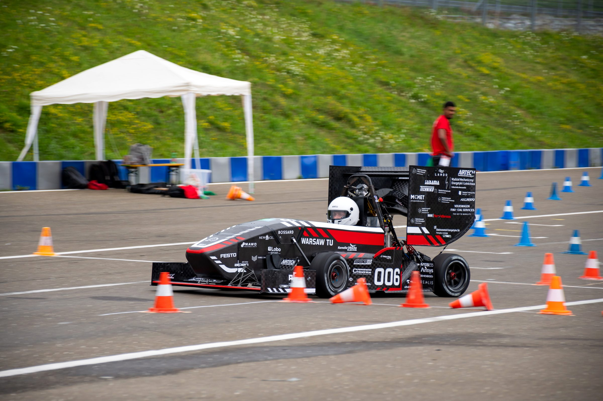
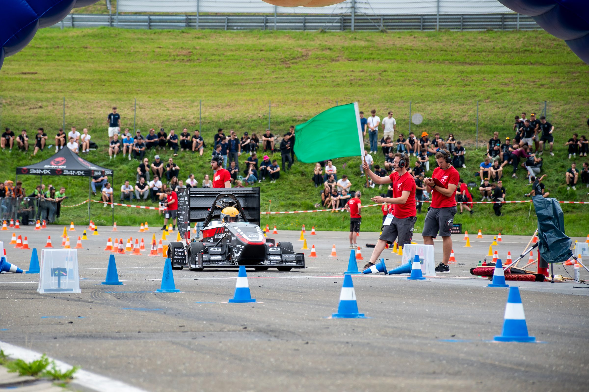
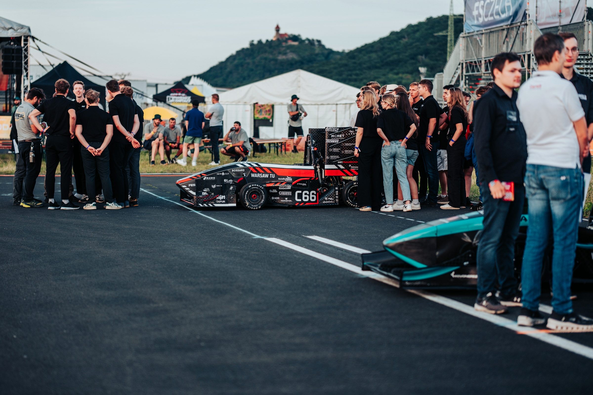
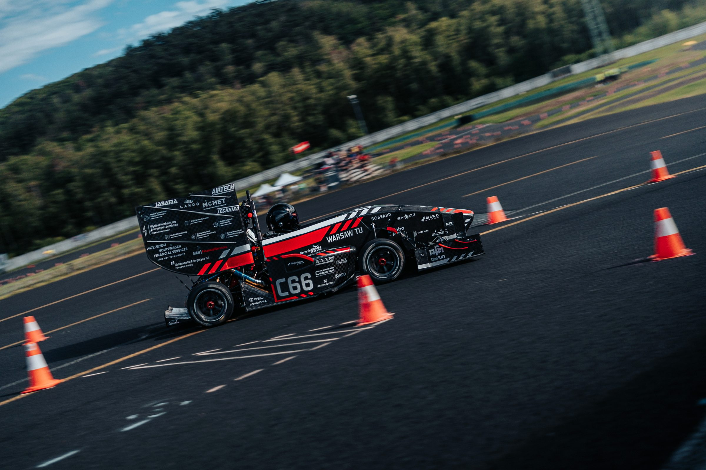
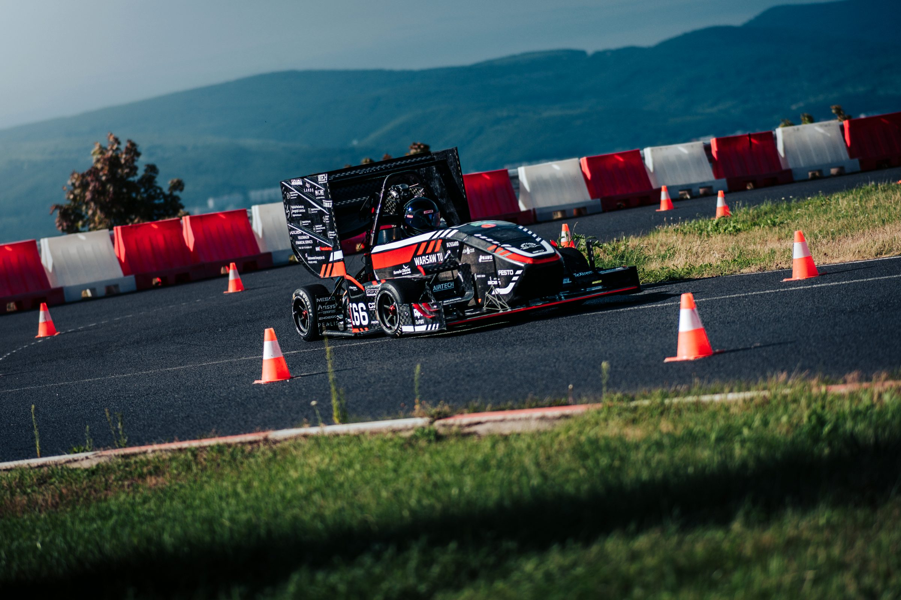

Roll-out WUT7
--dni
:
--godz
:
--min
:
--sek


Zapnijcie pasy i przeżyjcie ekscytującą podróż z Kołem Naukowym WUT Racing! Nasza historia rozpoczęła się w 2011 roku na Wydziale Mechanicznym Energetyki i Lotnictwa. Od tego czasu, zjednoczeni pasją do motoryzacji, dążymy do wspólnego celu — skonstruowania bolidu wyścigowego, który zmierzy się z wyzwaniami międzynarodowych zawodów Formula Student.
Jesteśmy wyjątkowym zespołem zrzeszającym utalentowanych studentów czołowych warszawskich uczelni, których głównym celem jest osiągnięcie triumfu w prestiżowych zawodach FS. Jak zamierzamy tego dokonać? Nasza droga do sukcesu to współpraca oparta na determinacji i pasji, mająca na celu wspólne stworzenie konkurencyjnego bolidu.
Poprzez nasze zaangażowanie i wspólny wysiłek, kreujemy nie tylko maszynę z metalu i technologii, ale także niepowtarzalną społeczność, w której każdy ma swój wkład w osiąganiu wspólnego celu. To dla nas więcej niż zwykły wyścig — to podróż w stronę spełniania marzeń i zdobywania uznania na przestrzeni studenckiego motorsportu.

Dział aerodynamiki WUT Racing przeprowadza niezbędne obliczenia, symulacje oraz optymalizację elementów nadwozia. Wdrażając nowe rozwiązania, sprawdzają ich wpływ na całość projektu i dobierają najlepsze z nich. Członkowie działu mają za zadanie także wykonanie elementów aerodynamicznych z materiałów kompozytowych.

Dział chassis WUT Racing projektuje i buduje monocoque, a także ramę oraz pochłaniacz energii (Impact Attenuator). Przeprowadza analizę wytrzymałościową MES. Wytwarza elementy kompozytowe bolidu oraz bada ich próbki.
Dział zawieszenia WUT Racing przeprowadza obliczenia, symulacje oraz testy. Projektuje części w środowisku CAD, przygotowuje dokumentację techniczną oraz pomaga przy produkcji. Członkowie zajmują się liczeniem quasi-dynamiki pojazdu, tj. systemu amortyzacji i stabilizacji.

Dział elektroniki WUT Racing zajmuje się projektowaniem systemów elektrycznych i elektronicznych, których zadaniem jest zespolenie ze sobą elementów konstrukcji. Inżynierowie tworzą podzespoły odpowiadające za sterowanie pracą silnika wraz z układem przeniesienia napędu, a także za prawidłowe i bezawaryjne funkcjonowanie systemów wspomagających kierowcę. Dział ten zajmuje się również akwizycją danych, które później używane są w celu optymalnego wykorzystania potencjału bolidu.
Dział silnika WUT Racing projektuje i modyfikuje poszczególne układy oraz ich elementy. Zajmuje się mapowaniem silnika dla różnych konkurencji, a także optymalizacją zużycia paliwa. Wśród zadań członków działu jest także rozwijanie stanowiska hamowni silnika.

Dział PR WUT Racing to wizytówka organizacji. Zajmuje się kreowaniem wizerunku WUT Racing. Koordynuje działania medialne oraz promocję wszelkich wydarzeń, w których team bierze udział.

Dział logistyki WUT Racing zajmuje się organizacją aspektów logistycznych związanych z targami branżowymi oraz eventami, a także wyjazdów zagranicznych Koła. W zakresie obowiązków leżą także działania optymalizacyjne transportu członków i konstrukcji.